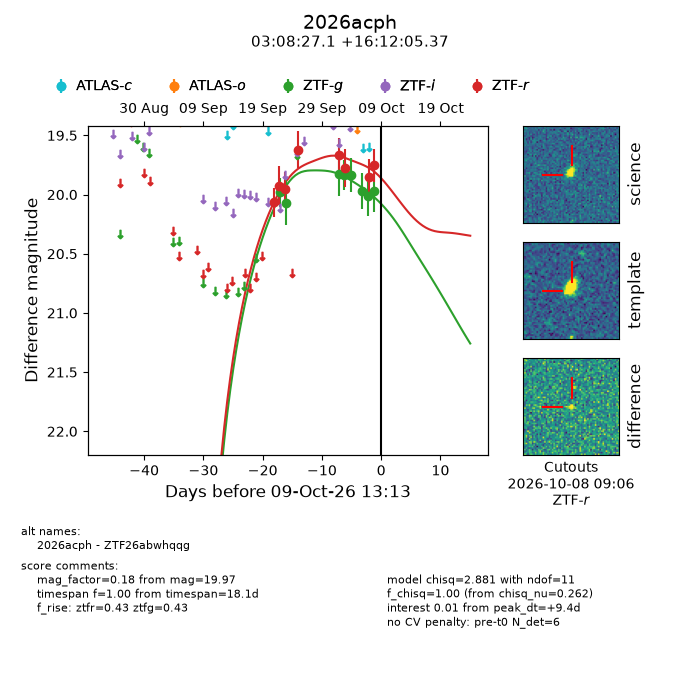
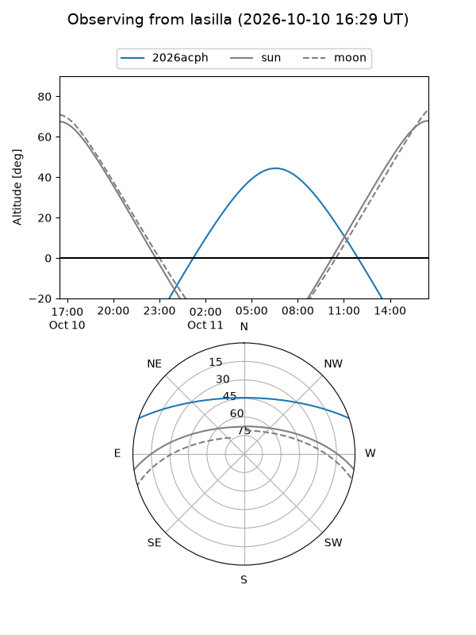
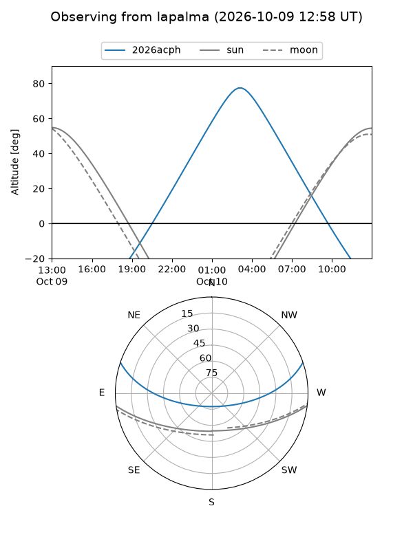
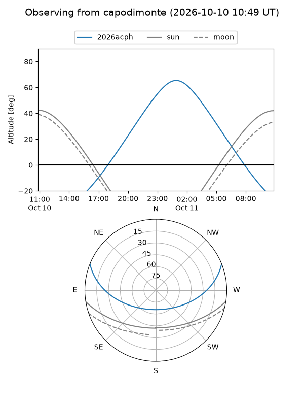
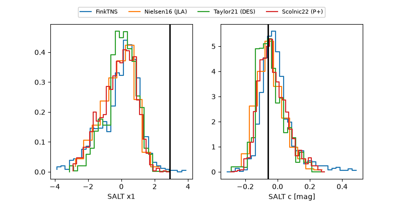

2026acph
Target 2026acph at 2026-10-09 13:15
Aliases and brokers:
FINK-ZTF: ztf.fink-portal.org/ZTF26abwhqqg
Lasair-ZTF: lasair-ztf.lsst.ac.uk/objects/ZTF26abwhqqg
ALeRCE-ZTF: alerce.online/object/ZTF26abwhqqg
YSE-PZ: ziggy.ucolick.org/yse/transient_detail/2026acph
TNS name: wis-tns.org/object/2026acph
Direct TNS query: direct search
alt names
ZTF26abwhqqg (ztf,fink_ztf)
2026acph (tns,yse)
Coordinates:
equatorial (ra, dec) = 47.1128,+16.20149
equatorial (HMS+DMS) = 03:08:27.07,+16:12:05.37
galactic (l, b) = (164.4633,-35.39322)
Flags:
peak dt: +9.4
Photometry:
last ztfg=19.97, ztfr=19.75
8 ztfg, 8 ztfr detections
Lightcurve

Visibility



Additional plots
